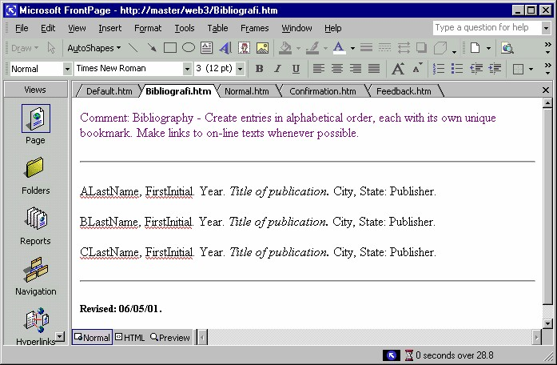

8 Template halaman pasif
Berikut ini beberapa template halaman pasif, yang bisa Anda menfaatkan sesuai
keperluan.
8.1 Normal Page
Normal Page adalah sebuah halaman kosong yang bisa digunakan untuk memulai
sebuah halaman Web dari nol.
Gambar 3.49 Halaman Normal Page
8.2 Bibliography
Bibliography adalah sebuah halaman yang menampilkan daftar sumber referensi.
Bisa Anda gunakan untuk melengkapi situs yang banyak menggunakan pustaka
acuan atau banyak nara sumber. Seperti terlihat pada Gambar 3.50, Anda tinggal
mengedit teks yang Anda dengan teks Anda sendiri. Dan tentu saja Anda bisa
mengubah format teks sesuai dengan gaya Anda sendiri.

Gambar 3.50 Bibliography
8.3 Confirmation Form
Sebenarnya Confirmation Form ini terkait erat dengan halaman form (halaman
jenis interaktif). Form ini menampilkan pesan terima kasih kepada pemakai atas
pengisian data/informasi yang telah dilakukannya. Anda dapat menambahkan
Confirmation WebBot untuk menunjukkan pemakai mana saja yang telah mengisi.
Gambar 3.51 Confirmation Form
8.4 Table of Contents
Halaman ini menerapkan penggunaan Table of Contents WebBot dalam membuat
daftar isi halaman situs web Anda. Caranya, Anda cukup menentukan halaman mana
yang akan digunakan sebagai titik awal, senjutnya WebBot akan membuat daftar
semua dokumen yang terhubung ke dokumen tersebut.
Gambar 3.52 Table of Contents
8.5 Frequently Asked Question
Frequently Asked Question adalah halaman dengan serangkaian pasangan
pertanyaan dan jawaban. Pertanyaan berada di bagian atas sedangkan jawaban ada di
bawahnya. Link sesudah masing-masing jawaban akan membawa pemakai kembali
ke bagian atas halaman.
Gambar 3.53 FAQ (Frequently Asked Question)
8.6 Photo Gallery
Photo Gallery adalah halaman yang cocok untuk Anda para fotografer atau hobi
koleksi foto.
Gambar 3.54 Halaman Foto Gallery
Anda bisa menggantinya dengan foto Anda sendiri, jangan lupa untuk mengganti
nama file foto yang akan di-link. Kecuali nama foto Anda sama dengan yang akan
diganti. Atau ganti saja nama foto Anda sehingga sama.
Copyright © Herlan Lesmana
Created with the Freeware Edition of HelpNDoc: Easily create CHM Help documents